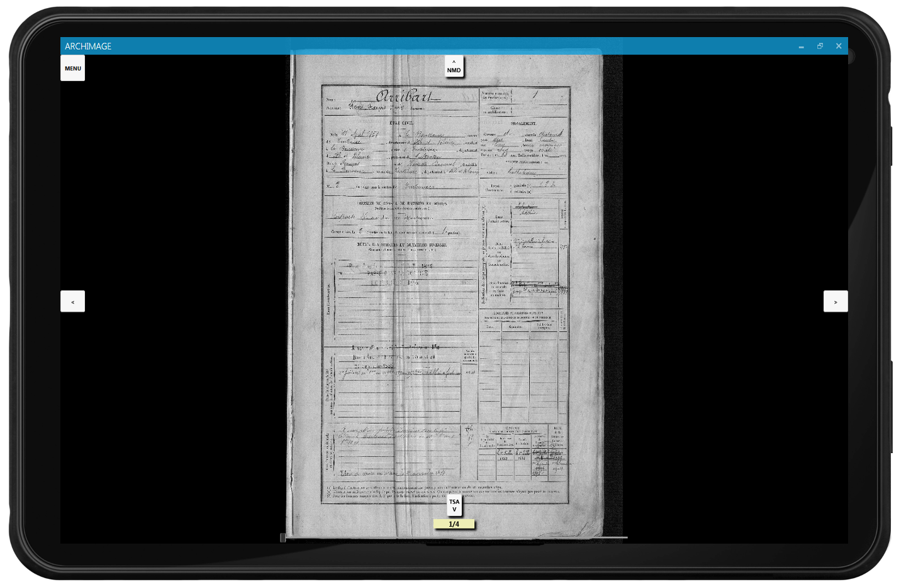
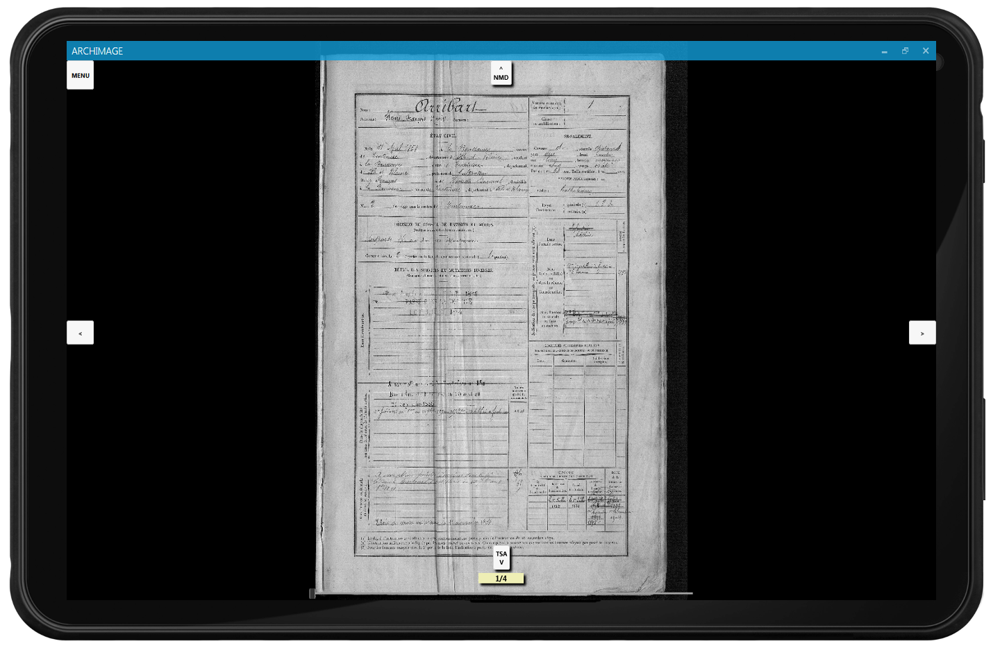

A hundred years after the Great War (1914-1918), 2014 is an important moment for the Archives, for this is the time when families and people interested in that part of history may want to learn more about their ancestors, especially about the soldiers who died in battle.
This project is driven by a navigation issue. Indeed, the Archives own an enormous amount of heterogeneous written documents and the biggest problem is often about finding a particular document. Therefore, the main goal is to create a navigation tool to browse the archives documents (registers, census, birth, wedding and death certificates...), and above all, to implement something delightful to use.
For that purpose, we are going to use pictures from the commemorative steles of a village in Ille-et-Vilaine, Trans-la-Forêt. Those steles will be represented on a map. It will then be about creating a navigation between the documents, which are linked through points of interest, to the people mentionned on the stele. This won't be a linear browsing, as if someone's name appears in a document, the user will be able to reach the other documents in relation to that person. In order to link those documents, there will be a need for archives-savvy people to annotate them, so that the navigation is as useful as it can get.
 

The main feature of our application is to be able to browse the various archives documents, in a quick and intuitive way. To make the navigation more fluid, the names written on the documents will be points of interest that allow the access to the other documents concerning the person. You may also look them up the usual way, one after the other.
The navigation may begin two different ways : either choosing a category to start with, or using an interactive map of Trans-la-Forêt (35), on which will be displayed two points of interest : the monument and the church stele. The names written on it will be that many groups of documents to start the navigation with.
The second point of this piece of software is annotation. People from the Archives, to whom it is intended, will be able to sign up and then sign in. Afterwards, the user may indicate where are the names on the documents and whose names they are. The application will then take care of displaying a point of interest on the name, leading to the documents concerning the person.
Our team is made of Charles COLLOMBERT, Cédric JÉZÉQUEL, Fabien L'HÉRIAU, Pierre LAUPRÊTRE, Vincent LEMORDANT and Kévin THEK, half of whom can actually work on the application, because of internships abroad. We are of course working with the Archives of Ille-et-Vilaine, but we are also supervised by a project manager from Atos, who helps us to succeed in our project. Finally, we are using existing projects developped by students from previous years (notably for the design of points of interest), and Sewelis, a semantic web tool created by Sébastien Ferré (IRISA), which will allow us to manage our data more effectively.